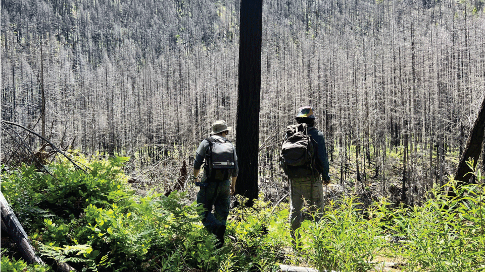
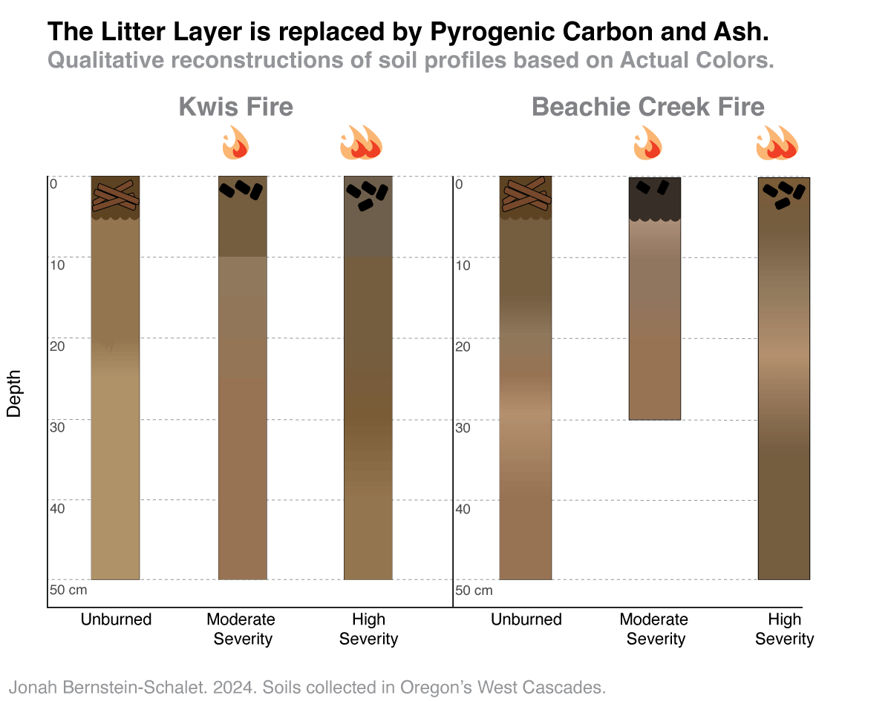
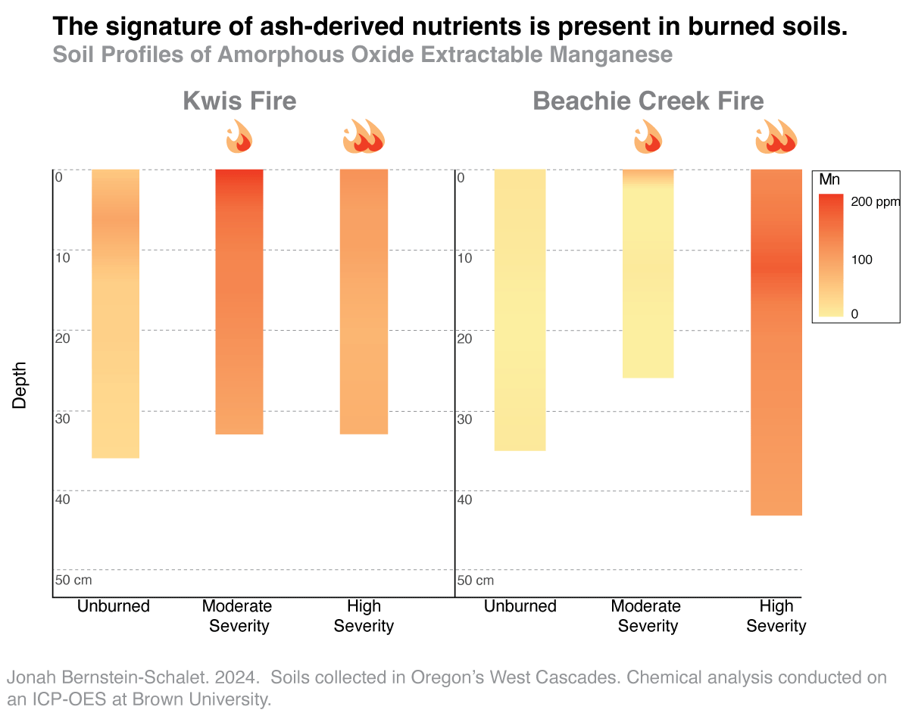
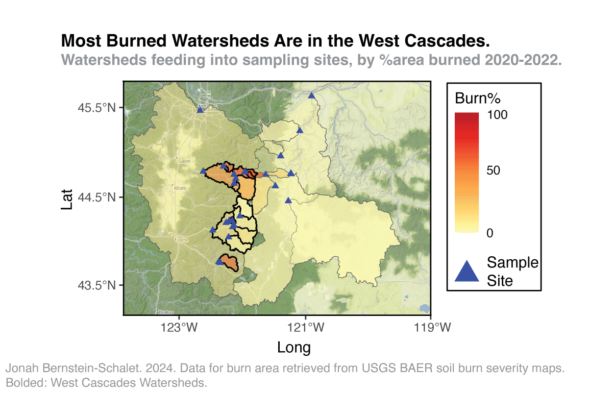
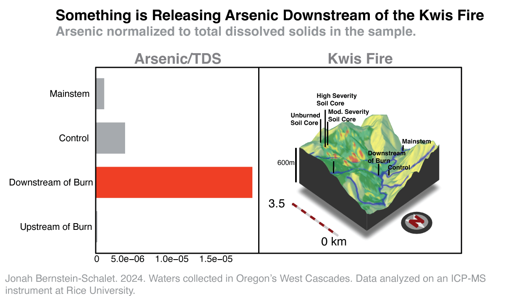
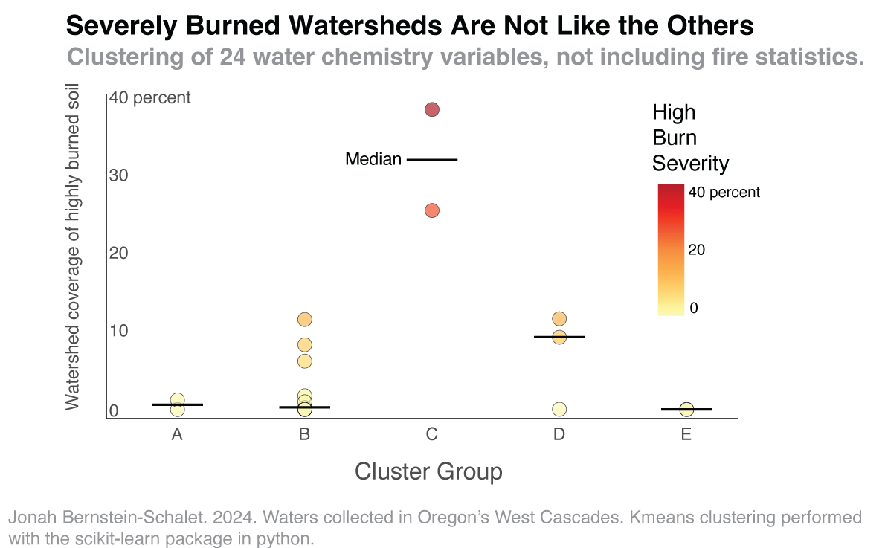
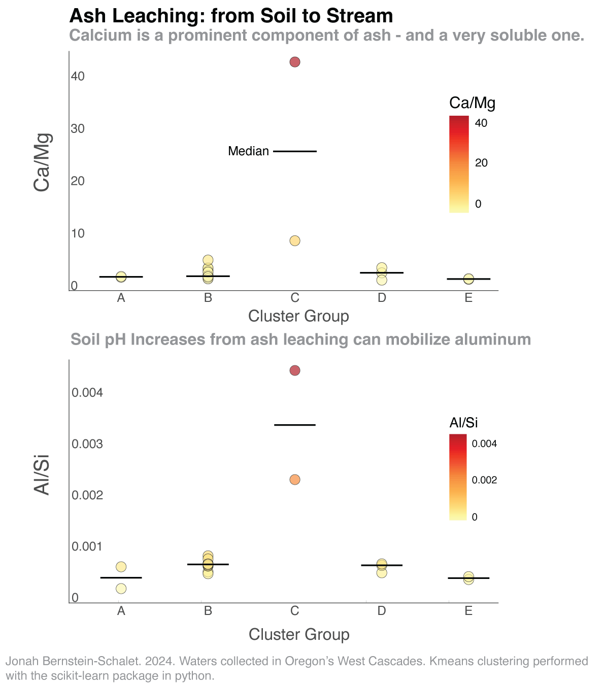

Jonah Bernstein-Schalet
In the summer of 2022, I spent 12 weeks using my bare hands and basic tools to restore areas that had been devastated by in Oregon's wildfires. As an earth science student, I would constantly speculate about how the wildfires were impacting the landscapes I was working on. Jokingly, a colleague told me to convince a professor to allow me to return to Oregon for research. After only a few months back at Brown, that joke started to become a reality. The science which resulted became deeply important to me, and turned into my senior thesis. This is the story of my findings.
One of the burn scars I revisited was inflicted by a very large fire that destroyed an old-growth forest, the 2020 Beachie Creek Fire. I wanted to study the impacts of fire on soil chemistry, so I collected three soil cores across a burn severity gradient - unburned, moderate severity, and high severity. I also collected soil at a much smaller fire, the Kwis fire of 2021.
My first finding was simple, and it happened while I was in the field. At unburned soil sites, the forest floor had a thick layer of fresh, organic litter - a mixture of mostly leaves, pine needles, and roots. Where the fires had swept through, this layer had been replaced by black charcoal and gray ash. Underneath the surface, soils mostly looked the same.
I took my samples back to the lab to peer into what you can't see with the naked eye - the distribution of elements among my soil profiles. Below, I show the results of just one of my many analyses - the distribution of amorphous manganese oxides. Manganese, like other nutrients, requires extremely high temperatures to become volotalized. When the carbon in biomass burns off, these nutrients are left behind in the form of metal oxides - which compose ash. Below, I show what appears to be higher concentrations of manganese oxides at the burned soil profiles from both sites, an indicator of the deposition and leaching of nutrients in ash.
While it might sound like a lot, collecting just six soil cores doesn't really capture the complexity of landscapes, especially ones impacted by very large fires. That's where water comes into play. When water comes into contact with soil, rocks, and biota, it can react with them and pick up dissolved elements and compounds. This water then infiltrates into the ground (or flows over the surface) towards the most topographically favorable position, which is how streams form. Not only is this process responsible for numerous elemental cycles, but it also gives us insight into the chemical reactions that are happening over an entire watershed area. Using this logic, I collected stream samples from watersheds in the Cascades region, where many of them, especially in the West Cascades, burned between 2020-2022.
Before I tell you more about that, I need to point you back to the Kwis fire, where I was able to collect a stream sample upstream and downstream of the burn scar, as well as from an unburned control site. Downstream of the burn, it appears that arsenic as a fraction of the total solutes in the sample was especially high, which points to a fire related process. The charcoal that's left behind after a fire can leach out organic molecules, which we call dissolved organic carbon. When microbes deep in the soil get their hands on dissolved organic carbon, they can use it as a source of energy - but to do that, they need to consume oxygen. This loss of oxygen results in a more reducing environment - favorable to the transformation of arsenic into its more mobile form: As(III). It's possible that this is what is occuring at the Kwis fire - but even if it isn't, it shows how rich stream samples can be in providing insight into landscape biogeochemistry.
So what does this mean for the other burned watersheds in the dataset? One of the ways I studied my dataset of water samples was through kmeans clustering, which groups together similiar samples. I calculated clusters based on 24 solutes I had analyzed for to find which samples had similiar trends in water chemistry. The question I wanted to ask was whether any unique clusters were also significantly burned. I plotted the clustered samples against various burn statistics (which are not included in the original clustering), and for the most part found no relationship. However - returning to Beachie Creek once more, I found that this watershed was unique in terms of both its water chemistry and its coverage of highly burned soils (cluster C).
So what is actually chemically unique about the samples from the Beachie Creek fire - and is it because of the fire? Like all things in Science, it's difficult to say, and impossible to prove. There are some signs, however, that fire is what's impacting Beachie Creek. One of them is a very high Ca/Mg ratio. Like manganese, calcium is a nutrient that is concentrated in ash when biomass burns. It is also extremely soluble in its mineral forms - which could mean the leaching of ash is actually what's happening here. This same process can raise the pH of soil, which can mobilize non-nutrients, like aluminum. We see in these samples a high aluminum to silicon ratio, which could reflect this process. Importantly, pH increases can enhance the mobilization of both silicon and aluminum - but aluminum is mobilized faster.
There are two things that really surprised me after I delved into this topic. The first is that we have a really poor understanding of how fires impact metal mobility from different landscape types - which is worrying given the increased prevalence of fire not just in Oregon, but in the rest of the USA and the globe. The second is that, at least in Oregon, there's almost no data availability on the dissolved metal load of streams. One of the limitations of my study was that I could only get one sample from each stream, and all of the fires had taken place a year or more prior. I would strongly advocate that land managers organize a protocol to frequently monitor stream chemistry in areas prone to fire - before and after the streams actually burn - out of the safety and respect for the communities who are devastated by these large fires, and who rely on these streams for recreation, livelihood, and a sense of peace and wellbeing.
This website was created as part of a class project for DATA 1500, a Brown University course taught by Professor Reuben Fischer-Baum, an editor on the graphics team at the Washington Post. The research presented here was conducted with the gracious help of many individuals, including my advisor, Daniel E. Ibarra, my mentors Sebastian Muñoz and Evan J. Ramos, my friend and field mate Kly Suquino, the environmental geochemistry faculty Marcelo, Jamie, and Joe, and many more. Funding was provided by the Institute at Brown for Environment and Society's Voss Fellowship. You can email me at jobernsteins@gmail.com.
My LinkedIn: link.